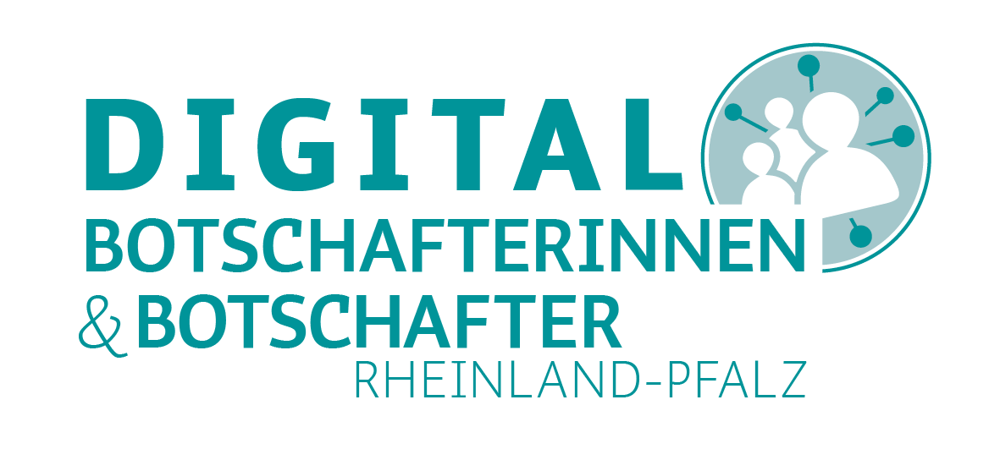

Bernhard Franke-Polz
Ihr Digitalbotschafter in Winnweiler

Was ist ein Digitalbotschafter?
Digitalbotschafter wollen vor Ort, ehrenamtlich Ansprechpartner für ältere Menschen sein und diesen
den Einstieg in die digitale Welt erleichtern.
Die Ziele sind älteren Menschen den Umgang mit neuer Technik näher zu bringen, Tipps zu geben
und auch Tücken aufzuzeigen.
Als Digitalbotschafter biete ich aktuell Einzelsprechstunden und Hausbesuche an.
Kontaktieren Sie mich gerne:
di.bo.franke-polz.winnweiler@mailbox.org
Weitere
Infos zu den Digitalbotschaftern